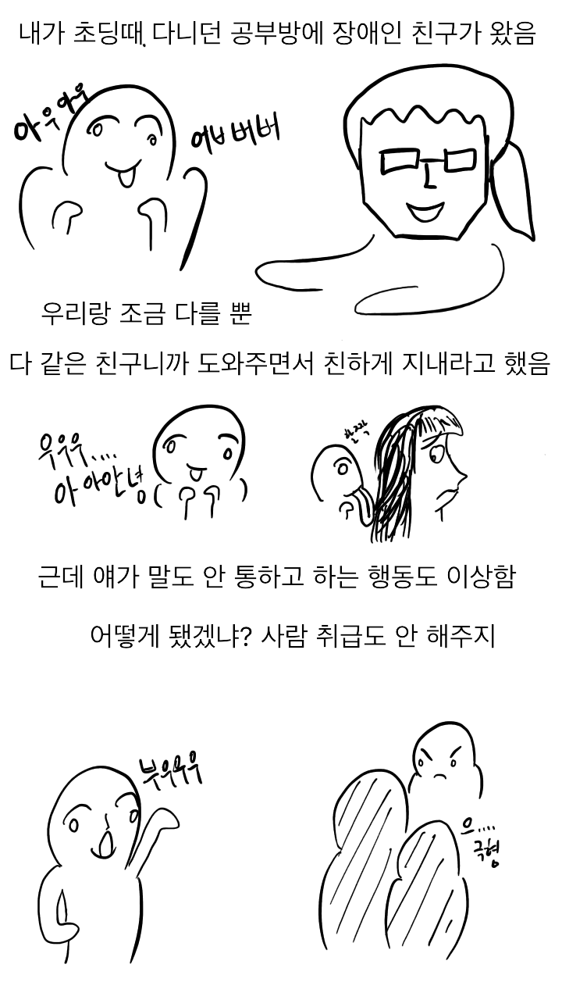
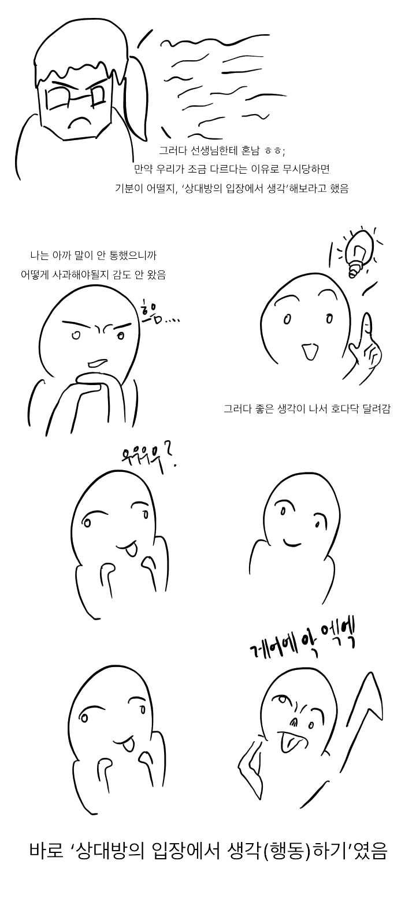
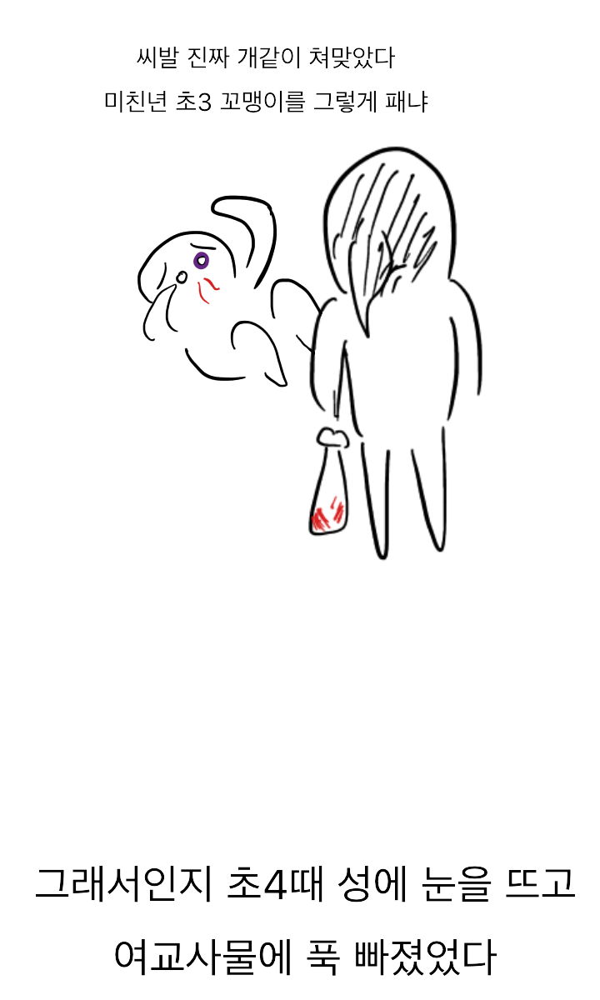

정상인들 사이에 비정상을 끼우고
잘 지내라고 하면 그게 될리가



정상인들 사이에 비정상을 끼우고
잘 지내라고 하면 그게 될리가
만화 그린 사람을 정상의 범주에 포함해도 될까?
괜히 장애인 학교가 있는게 아닌데 말이지...꼭 교사나 선생중 끼워놓으면 되는줄 아는 병신들이 있단 말야
지가 해줄 생각안하고
애들사이에 던져놓고
못어울리면
애들이 못됐다면서 지랄함
결말이 왜이래
대체 어디에 직격한거지. 교사? 맞는거? 자기보다 육체적으로 강한 여성?
선생 입장에서 보면 그냥 장애인 흉내 내면서 놀리는 놈으로 보였곘지. ㅋㅋㅋㅋㅋ
그렇지. 딱 이상한 행동 따라하면서 조롱하는 것처럼 보였겠다. 오히려 질 나쁘다고 더 쳐 맞았을 듯
지체장애인을 일반인 사이에서 키우고싶은 부모 마음도 알겠는데, 그건 주변 동급생한테도 선생한테도 모두한테 민폐임
심지어 어린애들이 더 악랄하게 괴롭혀서 트라우마만 더 생겨서 애한테도 안좋음. 그냥 부모 욕심때문에 민폐끼치는거지
우리 아이는 다르다구욧! 일반교실로 보내주세욧!!
나 초딩 때도 특수반 애 따라하면서 노는 놈들이 있었지
내 동창중 하나가 말 더듬는 언어장애 있던애 따라하면서 놀리다가 지금도 말 더듬음
초4에 눈을 뜨고 장르물까지 ㅋㅋㅋㅋㅋㅋㅋㅋㅋㅋㅋ 난놈이네
자신의 상식이 남에게도 있을 거라 생각해서 저러는거지
장애인을 어떻게 대해야 서로 상처 안받는지 알려줘야 할거아냐 ㅋㅋ

결론이 ㅅㅂ ㅋㅋㅋㅋㅋㅋㅋ
천재
뇌 손상 엔딩
솔직히 다른 애들 입장에선 존나 불편하기만 함
예전에 나도 한명 봤는데 지 혼자 막 뛰어댕기다가 트리거 눌리기만 하면 쉴새없이 빽빽 소리지르고 지랄이라서
결국 사회에나가면 장애인들과 만나게되기때문에 미리 배우는 개념이긴해 만약에 장애에대한 교육자체를 못받는다면 언젠가는 걔네 비국민아님?쪽으로 갈수도있는거고.. 뭐 방법의 개선이나 그런쪽으로 가야지 통합교육자체는 해야한다고봄
나도 어릴때 인성교육이라고 태권도장에서 오체불만족 얘기를 해주면서 팔다리가 없어도 농구를 했다길래
팔꿈치로 어떻게 공을 튀기지? 하고 순수한 호기심에 팔꿈치로 휘적휘적 해봤단 말야?
왜 혼나는지 얘기도 안해주고 왜 맞는거지??? 저사람은 왜 화가 난거지??? 인 상태로 존나 쳐맞았음
굿잡맨